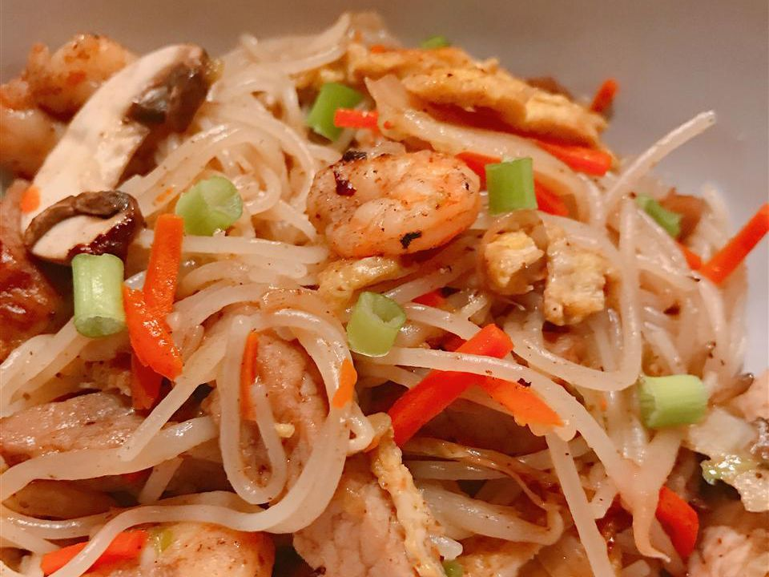

Taiwanese Fried Rice Noddles

Description
You'll most likely find all the ingredients at your local supermarket except for the five spice powder,
dried Chinese black mushrooms and rice vermicelli which can be found at your local Asian food mart.
All the measurements here are pretty much to taste, some people like more pork, some less, some more soy sauce, some less, etc.
Ingredients
- ½ pound thinly sliced pork loin
- ¼ cup soy sauce
- ¼ cup rice wine
- 1 teaspoon white pepper
- 1 teaspoon Chinese five-spice powder
- 1 teaspoon cornstarch
- 4 dried Chinese black mushrooms
- 1 (8 ounce) package dried rice vermicelli
- ¼ cup vegetable oil, divided
- 2 eggs, beaten
- ¼ clove garlic, minced
- 1 tablespoon dried small shrimp
- 3 carrots, cut into matchstick strips
- ½ onion, chopped
- 3 cups bean sprouts
- 4 leaves napa cabbage, thinly sliced
- salt to taste
- 3 sprigs fresh cilantro for garnish
Steps
- Place the pork into a mixing bowl and pour in the soy sauce and rice wine.
Sprinkle with the white pepper, five-spice powder, and cornstarch.
Mix well, then set aside to marinate. Soak the mushrooms in a bowl of cold water for 20 minutes,
then pour off the water, cut off and discard the stems of the mushrooms.
Slice the mushrooms thinly and reserve. Soak the rice vermicelli in a separate bowl of cold water for 10 minutes,
then pour off the water and set the noodles aside.
- Heat 1 tablespoon of the vegetable oil in a wok or large skillet over medium heat.
Pour in the eggs, and cook until firm, flipping once, to make a pancake.
Remove the egg pancake, and allow to cool, then thinly slice and place into a large bowl.
Heat 2 more tablespoons of the vegetable oil in the wok over high heat.
Stir in the garlic and dried shrimp, and cook until the shrimp become aromatic, about 20 seconds.
Next, add the pork along with the marinade, and cook until the pork is no longer pink, about 4 minutes.
Stir in the carrots and onion, and cook until the carrots begin to soften, about 3 minutes.
Finally, add the bean sprouts, napa cabbage, and sliced mushrooms;
cook and stir until the vegetables are tender, about 3 minutes more.
Scrape the pork mixture into the bowl along with the eggs,
then wipe out the wok and return it to the stove over medium-high heat.
- Heat the remaining vegetable oil in the wok, then stir in the drained rice vermicelli noodles.
Cook and stir for a few minutes until the noodles soften, then stir in the reserved pork mixture.
Scrape the mixture in to a serving bowl and garnish with cilantro to serve.